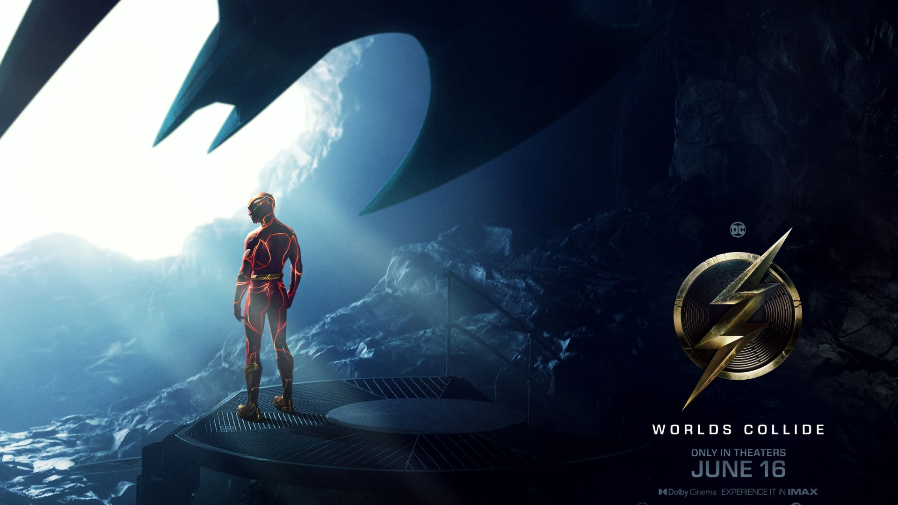

La Bruja de Hitler
Sinopsis
Es el año 1961 y en la Patagonia argentina una familia de prófugos nazis llega a la casa de los Krauss en busca de refugio para poder transitar una vida normal con total impunidad. ¿Cómo es la normalidad del silencio, la obediencia y la violencia para los hijos adolescentes de estas dos familias que son testigos y víctimas de abusos y crímenes impunes? Gretel, la hija del jerarca nazi, se entrega a la perversión secreta de su padre. Hans busca convertirse en un buen hombre a través del sufrimiento. Emma, la más pequeña, experimenta en su propio cuerpo la asfixia del silencio. Frida se atreve a rechazar el mandato paterno y se entrega a un amor prohibido, aunque el precio sea sufrir en carne propia lo más oscuro de la condición humana. La película es una fábula inspirada en personajes y hechos reales, en la que los horrores del nazismo que habitan en estos personajes aún persisten en el presente.
Simone, la mujer del siglo
Sinopsis
El destino de Simone Veil, su infancia, su lucha política, sus tragedias. El retrato épico e intimista de una mujer con una vida fuera de lo común, que marcó su época con la defensa de unos ideales humanistas, que siguen estando de actualidad.
Disco de oro
Sinopsis
Biopic del referente musical Neil Bogart, un soñador judío que, empezando con muchas ganas y poco dinero, acabó convirtiéndose en multimillonario gracias a la creación de su discográfica Casablanca Records en 1974. La cual fue una fuente de descubrimiento y lanzamiento a la fama, de muchos de los cantantes y grupos más célebres de la historia. KISS, Parliament, Donna Summer y The Village People fueron algunos de los que pasaron por el sello, uno de las más relevantes en la década de los 70 debido al trabajo de Neil, que fue la marca por excelencia en estos años dejando sin lugar a dudas una huella imborrable en la historia de la música.
SUGA - Agust D TOUR “D-DAY” in JAPAN:
Sinopsis
Para disfrutar el DÍA D con tantos ARMY como sea posible, llevaremos a cabo el SUGA | Agust D TOUR "D-DAY" en JAPÓN: VISIÓN EN VIVO.
Elementos
Sinopsis
ELEMENTOS de Disney y Pixar, es un nuevo largometraje original ambientado en Elemental CIty, donde conviven los habitantes del fuego, el agua, la tierra y el aire. La historia nos presenta a Ember, una joven dura, ingeniosa y feroz, cuya amistad con un chico divertido y que se deja llevar por la corriente, llamado Wade, desafía sus creencias sobre el mundo en el que viven. Dirigida por Peter Sohn, producida por Denise Ream, y con las voces de Leah Lewis y Mamoudou Athie, en su versión original en inglés, como Ember y Wade, respectivamente, ELEMENTOS se estrena sólo en cines el 15 de junio de 2023.
Flash
Sinopsis
Los mundos chocan en "Flash" cuando Barry usa sus superpoderes para viajar en el tiempo y cambiar los eventos del pasado. Pero cuando su intento de salvar a su familia altera el futuro sin darse cuenta, Barry queda atrapado en una realidad en la que el general Zod ha regresado, amenazando con la aniquilación, y no hay superhéroes a los que recurrir. Es decir, a menos que Barry pueda sacar a un Batman muy diferente de su retiro y rescatar a un kryptoniano encarcelado... aunque no sea el que está buscando. En última instancia, para salvar el mundo en el que se encuentra y regresar al futuro que conoce, la única esperanza de Barry es correr por su vida. Pero ¿será suficiente hacer el último sacrificio para reiniciar el universo?
Juego de brujas
Sinopsis
Una joven deberá en una noche conocer los secretos de la brujería para enfrentarse al demonio y salvar a su hermana. Sólo tendrá la ayuda de 3 brujos que la llevarán por el tortuoso camino del aprendizaje a ser una verdadera bruja.
Krakens y sirenas: Conoce a los Gillman

Sinopsis
Una tímida adolescente descubre que forma parte de la legendaria realeza de los míticos Kraken, los señores del mar, y que su destino en las profundidades del océano es mucho mayor de lo que jamás había soñado.
Indiana Jones y el día del destino
Sinopsis
El arqueólogo Indiana Jones deberá emprender otra aventura contra el tiempo para intentar recuperar un dial legendario que puede cambiar el curso de la historia. Acompañado por su ahijada, Jones pronto se encuentra enfrentándose a Jürgen Voller, un ex nazi que trabaja para la NASA.